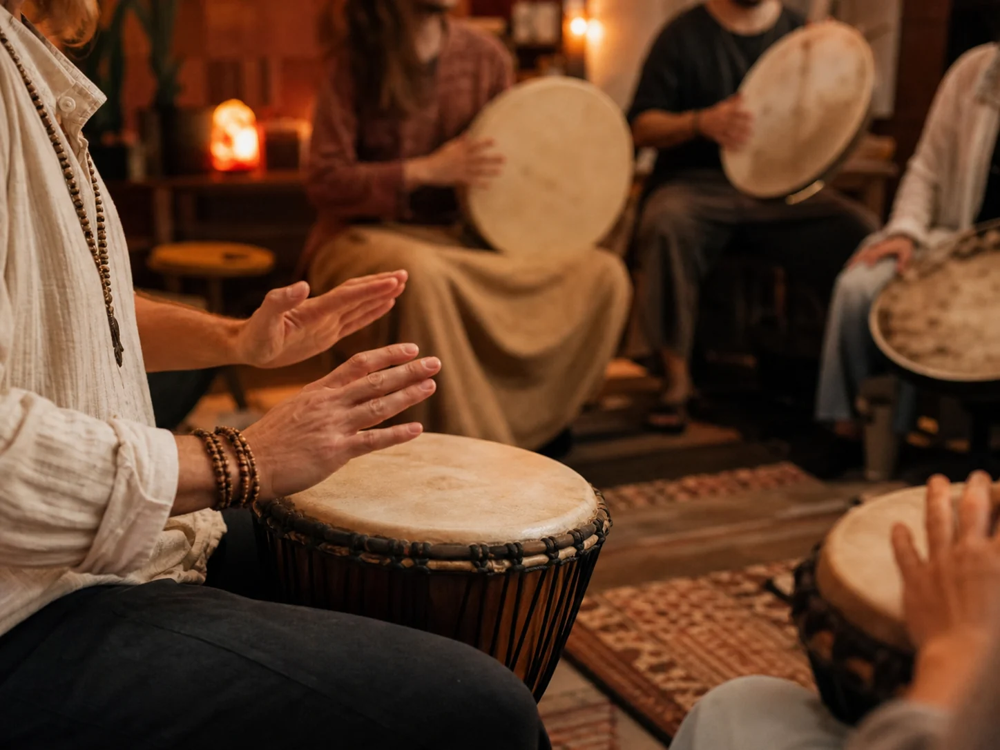
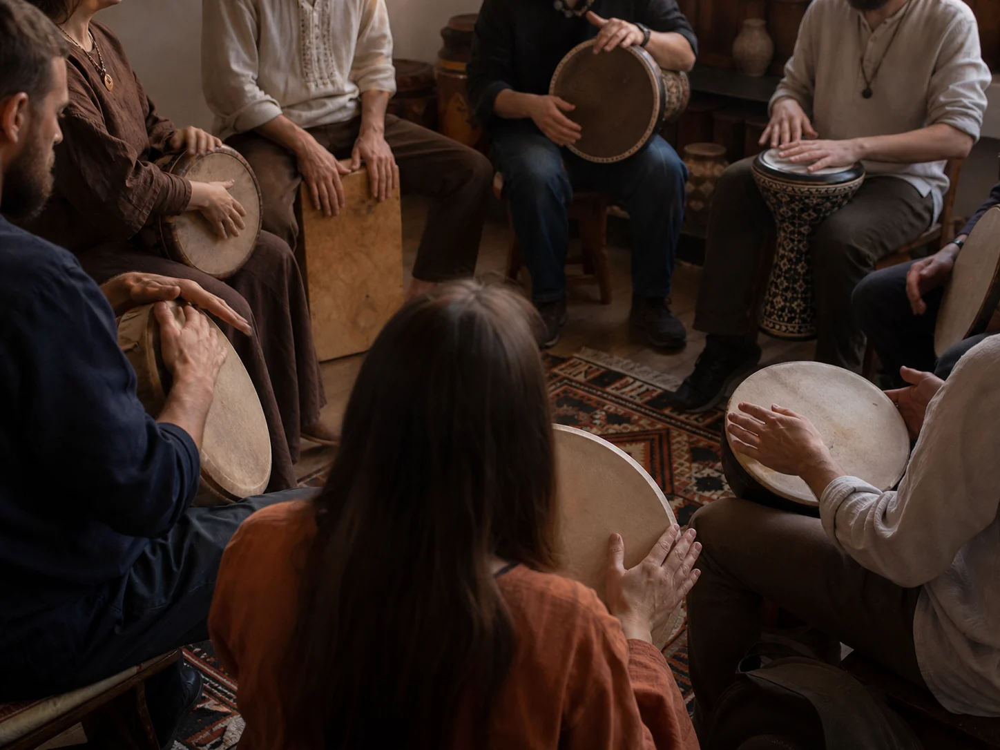
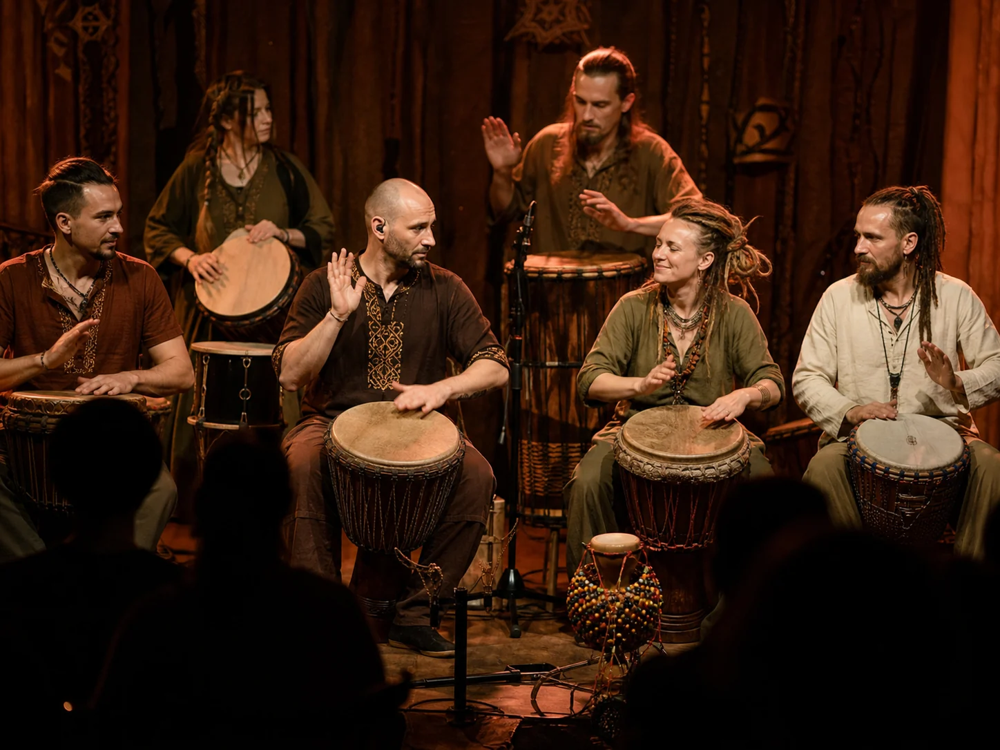
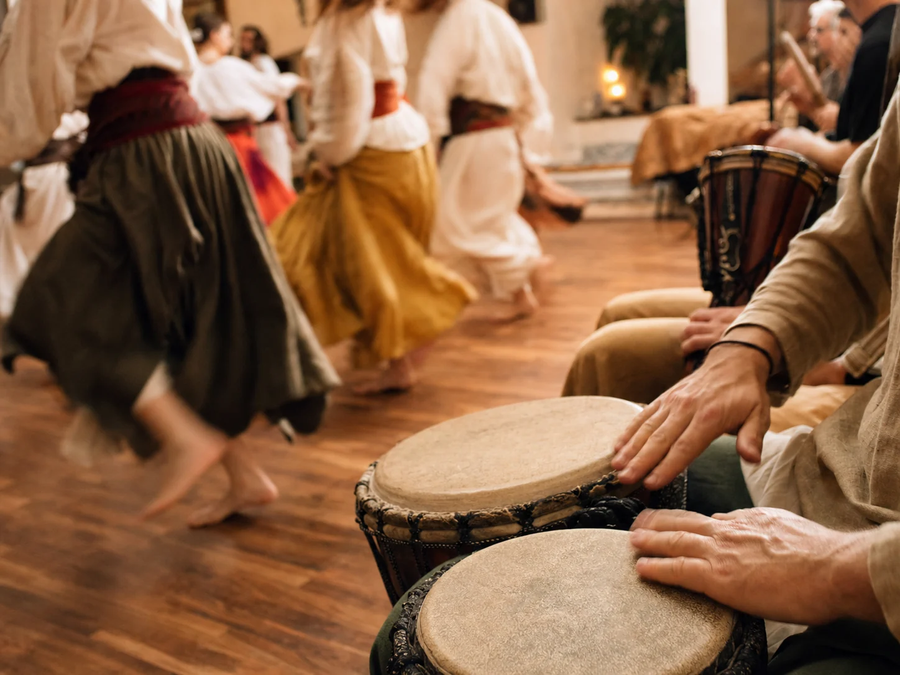

01 / Західна Африка
Джембе
Келихоподібний барабан, на якому грають долонями. Три базові голоси — бас, тон і слеп — дозволяють зібрати повний ритм одним інструментом.
Досліджуйте барабани світу, слухайте ритми, складайте власні схеми й знаходьте людей, з якими хочеться грати.
Навігатор у світі ударних традицій: від першого знайомства з інструментом до власного ритму й живої гри в колі.
Почніть із характеру звучання, а не з назви. Низький гул, сухий акцент чи дзвінкий слеп — кожен інструмент займає своє місце в ансамблі.
Келихоподібний барабан, на якому грають долонями. Три базові голоси — бас, тон і слеп — дозволяють зібрати повний ритм одним інструментом.
Компактний барабан із виразними низьким «дум» і високим «тек». Добре читається в танцювальній музиці.
Дерев’яний короб із басом у центрі та гострими ударами біля краю. Зручно замінює компактну ударну установку.
Тонка рама й велика мембрана дають довгий, об’ємний звук. До цієї родини належать бубни, даф і бендір.
Високі вузькі барабани, що зазвичай звучать парою або сетом. Їхній голос тримає пульс і веде діалог із танцем.
Барабан міг бути способом передати звістку, супроводити обряд, підтримати танець або об’єднати громаду.
Ритм допомагав координувати людей на відстані й позначати важливі події.
Повторюваний пульс супроводжував календарні, родинні та духовні практики.
Ударник стежив за рухом танцівника, підкреслював акценти й змінював енергію.
Традиційні голоси входять у ф’южн, електронну музику та відкриті барабанні кола.
Увімкніть клітинки, виберіть темп і натисніть «Грати». Активний крок рухається зліва направо.
Порада: почніть із баса на 1 і 5, а потім додайте слеп між ними.
Короткі навчальні версії патернів допоможуть упізнати характер ритму до того, як ви візьмете інструмент.
Рівний, просторий рисунок для першого спільного джему.
Щільніший патерн із чітким низьким акцентом.
Почергові високі й низькі удари як коротка музична фраза.
Кожен урок розрахований на 5–10 хвилин і не вимагає знання нот. Можна тренуватися навіть на столі або подушці.
Поставте метроном на 70 BPM. Чергуйте праву й ліву руку, промовляючи «раз — і — два — і». Спочатку важлива рівність, не гучність.
Бас береться ближче до центру мембрани, тон — біля краю зібраними пальцями, слеп — швидким розслабленим ударом. Не форсуйте силу.
Слухайте загальний пульс і басову основу. Якщо загубилися, зупиніться, знайдіть першу долю та поверніться простим повторюваним ударом.
Оберіть вісім кроків. Поставте два баси, два високі удари й залиште паузи. Повторіть, а потім змініть лише один крок.
Оберіть регіон, щоб побачити інструменти, характер звучання та напрям для подальшого знайомства.
Поліритмія тут народжується з кількох взаємопов’язаних партій. Джембе часто веде діалог, а басові дунуни тримають опору.
Точка входу для тих, хто хоче дивитися виступи, знаходити навчання й не пропускати живі ритмічні події.
Відео й записи виконавців, які представляють джембе, дарбуку, рамкові барабани, кахон та інші школи.
Отримувати добірки →Одноденні практикуми, відкриті уроки та курси для різного рівня — від першого удару до ансамблевої гри.
Переглянути формати →Найближчі джеми, камерні кола, етнофестивалі та концерти за участі спільноти.
До подій спільноти →Тусівки, барабанні кола, концерти, співпраця з танцівниками та навчання — оберіть формат, у якому вам комфортно почати.
Барабан тут — привід зібратись, а не центр уваги. Вечори без програми: хтось приносить гітару, хтось — чай, хтось просто слухає.
Локації змінюються — від майстерні до берега річки. Стежте за анонсами спільноти.

Закрите коло на 8–15 людей. Ведучий задає базовий патерн, а далі ритм будується пошарово — кожен додає свій голос, не заглушуючи інших.
Підходить і тим, хто бере барабан уперше: інструменти спільноти видаються на місці.

Кілька разів на сезон спільнота виходить на сцену — на міські фестивалі, благодійні події чи власні концерти.
Участь відкрита для тих, хто регулярно відвідує кола й готовий до репетицій.

Працюємо в парі з танцювальними студіями та фольклорними колективами — від трайбл-ф’южн до автентичних обрядових танців.
Якщо ваш колектив шукає живий супровід для виступу чи регулярних занять — обговоримо формат.

Залиште контакт — і отримуйте анонси найближчих кіл, нові мініуроки та тематичні добірки.